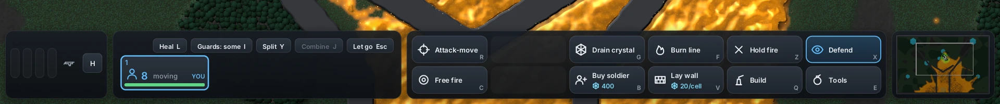
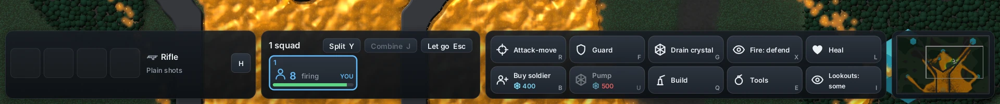

<title>Command Card Rebuilt</title>
<meta name="claude:viewport-fit-sides" content="cover">
<style>
:root { --bg:#f6f7f9; --fg:#1b2129; --muted:#5b6673; --card:#ffffff; --edge:#dde2e8; --accent:#2f6fb0; }
@media (prefers-color-scheme: dark) { :root:not([data-theme="light"]) { --bg:#13171c; --fg:#e7ebf0; --muted:#9aa5b1; --card:#1b2129; --edge:#2b333d; --accent:#7ab3ea; color-scheme:dark; } }
:root[data-theme="dark"] { --bg:#13171c; --fg:#e7ebf0; --muted:#9aa5b1; --card:#1b2129; --edge:#2b333d; --accent:#7ab3ea; color-scheme:dark; }
body { background:var(--bg); color:var(--fg); font:16px/1.55 system-ui, -apple-system, "Segoe UI", sans-serif; margin:0; }
main { max-width:1000px; margin:0 auto; padding-block:24px 64px; padding-left:max(16px, env(safe-area-inset-left, 0px)); padding-right:max(16px, env(safe-area-inset-right, 0px)); }
h1, h2 { text-wrap:balance; } td { font-variant-numeric:tabular-nums; }
h1 { font-size:1.6rem; margin:0 0 4px; } h2 { font-size:1.15rem; margin:32px 0 8px; }
p, li { color:var(--fg); } .muted { color:var(--muted); font-size:.92rem; }
figure { margin:12px 0 20px; background:var(--card); border:1px solid var(--edge); border-radius:10px; padding:10px; }
figure img, figure video { width:100%; height:auto; display:block; border-radius:6px; }
figcaption { font-size:.92rem; color:var(--muted); margin-top:8px; }
table { border-collapse:collapse; width:100%; font-size:.92rem; background:var(--card); }
th, td { border:1px solid var(--edge); padding:6px 8px; text-align:left; }
.wrap { overflow-x:auto; }
code { font-size:.88em; }
</style>
<main>
<h1>Command card rebuilt</h1>
<p class="muted">Your picks of 15 Nov: Card 2, Burn a line removed, Guard (c), click a building (b), Build option 1. Squad mode, the Fork, 1920 x 1080 at 125% unless noted. Frames from the game itself on the cloud's software GPU.</p>

<h2>The bar, before and after</h2>
<figure>
<figcaption>Before: 6 x 2, three fire buttons, Burn line, Lay wall on the main card, two empty tiles; Heal and Guards in the squad panel's header. The gun's name is dropped for room.</figcaption></figure>
<figure>
<figcaption>After: 5 x 2. Attack-move, Guard, Drain, Fire, Heal / Buy, Pump, Build, Tools, Lookouts. No empty tile. The card is 122 units narrower, so the gun strip keeps "Rifle, Plain shots".</figcaption></figure>

<h2>The fire button and the pages</h2>
<figure><video src="card.mp4" controls loop muted playsinline></video>
<figcaption>One click a frame: the fire button cycles defend, free, hold, defend (its tooltip open); then Build (option 1: Turret, Pump, Wall, Lure, Siren; switch and Back below) and Tools. Z, X and C still pick hold, defend, free directly.</figcaption></figure>

<h2>Guard</h2>
<figure><video src="guard-vs-move.mp4" controls loop muted playsinline></video>
<figcaption>Seed 3, 1 to 20 s, the same crystal. Left: a plain move there (the old right click). Right: Guard; the ring is the zone it keeps (the crystal's rim plus 3 cells). At 19 s: walkers in the zone 152 (move) vs 59 (guard); killed 1,423 vs 2,058.</figcaption></figure>
<div class="wrap"><table>
<tr><th>seed</th><th>walkers in the zone at 29 s, move / guard</th><th>killed, move / guard</th></tr>
<tr><td>1</td><td>54 / 7</td><td>2,422 / 2,685</td></tr>
<tr><td>2</td><td>573 / 585</td><td>670 / 677</td></tr>
<tr><td>3</td><td>126 / 80</td><td>2,317 / 3,189</td></tr>
<tr><td>4</td><td>76 / 88</td><td>2,603 / 2,984</td></tr>
<tr><td>5</td><td>1,180 / 1,090</td><td>6,168 / 6,523</td></tr>
<tr><td>6</td><td>23 / 73</td><td>2,197 / 1,739</td></tr>
</table></div>
<p class="muted">Guard kills more on 5 of 6 seeds (p = 0.22) but keeps the zone clearer on only 3 of 6. Soldiers still aim at the thickest slime they see, so they hold when that is outside the zone. A tuning note, not a blocker.</p>

<h2>Click a building</h2>
<figure><video src="building.mp4" controls loop muted playsinline></video>
<figcaption>A pump on the squad's crystal. Esc lets go of the squad; a click on the pump selects it: the panel shows "Pump, level 1 of 3, pumping", its health, and the card shows Demolish (+250, half its 500 price) and Upgrade (400). Two upgrades take it to level 3 (21 food a second); Demolish pulls it down. The refund was not ruled: half is a proposal.</figcaption></figure>

<p class="muted">Source: Reports/command-card-2026-11-15/ in the repo.</p>
</main>
